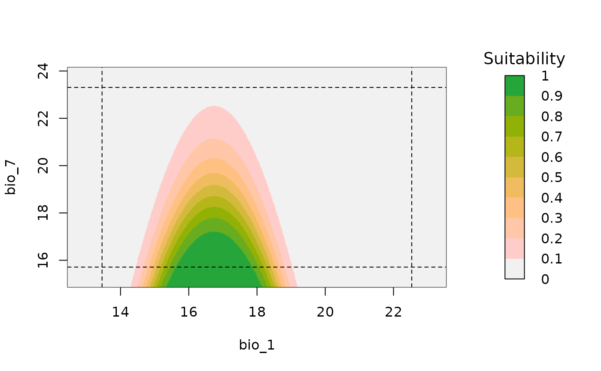
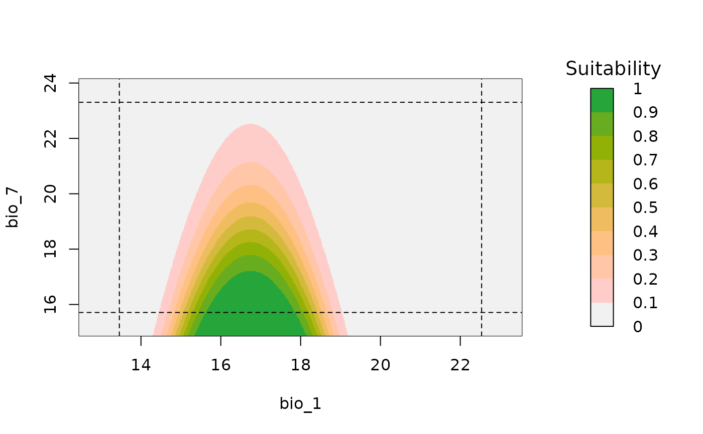

Bivariate response plot for fitted models
bivariate_response.RdA plot of suitability prediction in a two-dimensional environmental space.
Usage
bivariate_response(models, variable1 , variable2, modelID = NULL, n = 500,
new_data = NULL, extrapolate = TRUE, add_bar = TRUE ,
add_limits = TRUE, color_palette = NULL,
xlab = NULL, ylab = NULL, ...)Arguments
- models
an object of class
fitted_modelsreturned by thefit_selected()function.- variable1
(character) name of the variable to be plotted in x axis.
- variable2
(character) name of the variable to be plotted in y axis.
- modelID
(character) name of the ModelID presents in the fitted object. Default = NULL.
- n
(numeric) the number of breaks for plotting grid. Default = 500
- new_data
a
SpatRaster, data.frame, or matrix of variables representing an area of interest. Default = NULL.- extrapolate
(logical) whether to allow extrapolation to study the behavior of the response outside the calibration limits. Ignored if
new_datais defined. Default = TRUE.- add_bar
(logical) whether to add bar legend. Default = TRUE.
- add_limits
(logical) whether to add calibration limits if
extrapolate = TRUE. Default = TRUE.- color_palette
(function) a color palette function to be used to assign colors in the plot. The default, NULL uses
rev(hcl.colors(n, "terrain")).- xlab
(character) a label for the x axis. The default, NULL, uses the name defined in
variable1.- ylab
(character) a label for the y axis. The default, NULL, uses the name defined in
variable2.- ...
additional arguments passed to
image.
Examples
# Example with glmnet
# Import example of fitted_models (output of fit_selected())
data(fitted_model_maxnet, package = "kuenm2")
# Response curve (notice response affected by covariance)
bivariate_response(models = fitted_model_maxnet, modelID = "Model_13",
variable1 = "bio_1", variable2 = "bio_12")
 # Example with glm
# Import example of fitted_models (output of fit_selected())
data(fitted_model_glm, package = "kuenm2")
# Response curve
bivariate_response(models = fitted_model_glm, modelID = "Model_1",
variable1 = "bio_1", variable2 = "bio_7")

# Example with glm
# Import example of fitted_models (output of fit_selected())
data(fitted_model_glm, package = "kuenm2")
# Response curve
bivariate_response(models = fitted_model_glm, modelID = "Model_1",
variable1 = "bio_1", variable2 = "bio_7")
